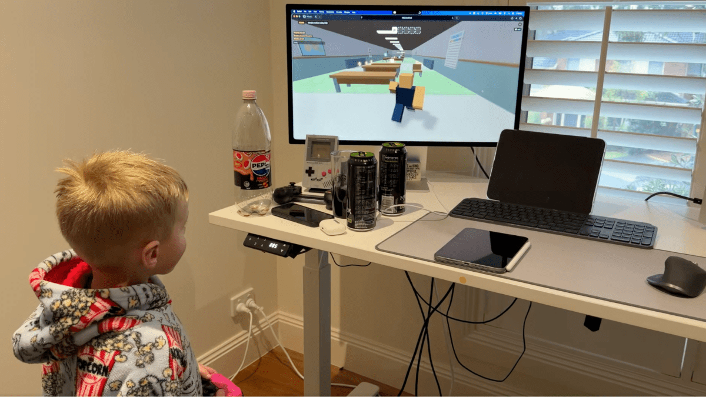

Pour protéger son fils des inconnus, ce développeur a créé son propre Roblox avec l’IA

L'intelligence artificielle continue de transformer en profondeur notre quotidien et l'économie. Cette annonce s'inscrit dans une dynamique où les grands acteurs accélèrent leurs investissements et leurs lancements.
Ce qu'il faut retenir
Inquiet à l’idée que son fils puisse discuter avec des inconnus sur Roblox, le développeur Adam Lyttle lui a créé un jeu similaire à l’aide de l’IA.
Une version privée peuplée de faux joueurs, alors que la plateforme est régulièrement critiquée pour la sécurité des mineurs.
Pourquoi c'est important
Cette information marque une nouvelle étape dans le développement de l'intelligence artificielle. Elle concerne directement les utilisateurs de technologies numériques et mérite d'être suivie de près dans les prochaines semaines. Pour protéger son fils des inconnus, ce développeur a créé son propre Roblox avec l’IA est ainsi un signal à prendre en compte pour comprendre les évolutions du secteur.
En résumé
Retenez l'essentiel : Pour protéger son fils des inconnus, ce développeur a créé son propre Roblox avec l’IA. Cette actualité a été rapportée par Numerama. Nous continuerons de suivre ce sujet et de vous tenir informés des prochaines évolutions.
🛒 En lien avec cet article
Liens de partenariat Amazon : une commission peut être reversée, sans surcoût pour vous.
Source : Numerama